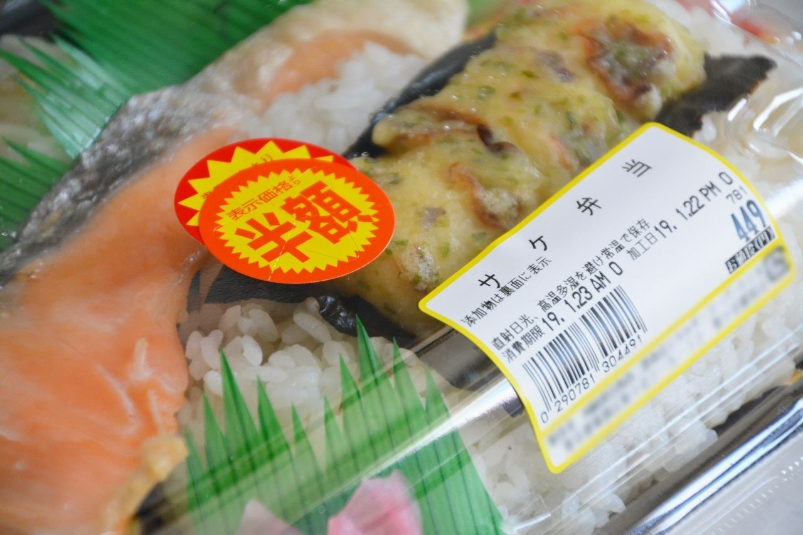
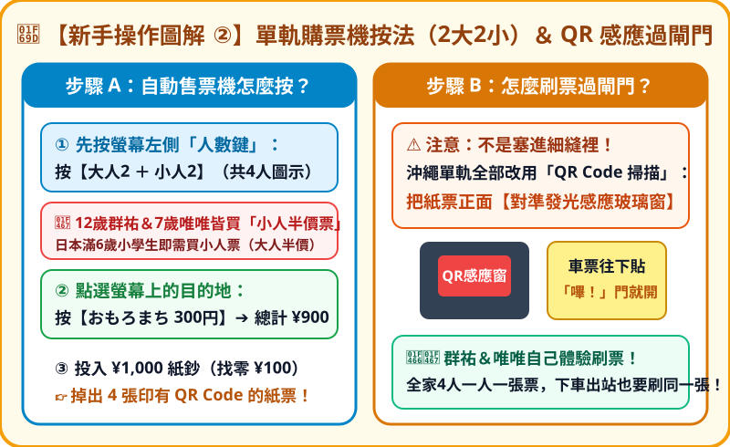
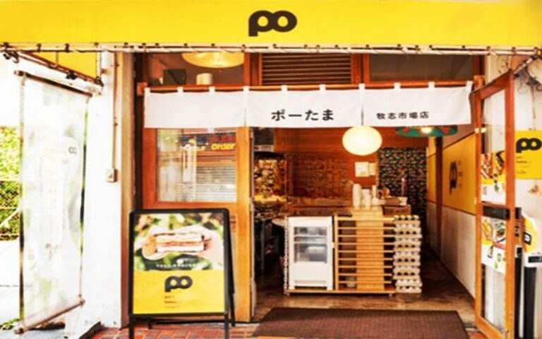

林家四口專屬旅遊檔案
量身定制 ✕ 獨立床位 ✕ 各取所需
• 房型：家庭房（2 小型雙人床 ＋ 2 沙發床 ＝ 整整 4 張床！）
• 床墊：全館全面配置 五星級席夢思（Simmons）名床
• 總價：3 晚含稅 JPY 33,572（約 NT$ 7,050，每晚全家只要約 NT$ 2,350！）
• 人數認證：訂單已註明「2位大人 ＋ 2位兒童（12和7歲）」，合法合規零糾紛
景點 1【THE NEST NAHA 飯店本體全方位攻略】
2025 全新開幕旗艦 ✕ 頂樓無邊際溫水泳池 ✕ 席夢思名床

📖 完整介紹與特色
THE NEST NAHA 於 2025 年全新落成，融合自然「鳥巢」的溫潤木質調與北歐極簡線條，專門為追求高睡眠品質與度假氛圍的家庭打造。最震撼的設施為 14 樓頂樓的 22 公尺露天溫水無邊際泳池（全年開放），即使在 12 月中旬也能泡在舒適的溫水裡，俯瞰那霸市景與遠方西海岸夕陽。
🎯 行家入住與遊玩攻略
- 頂樓泳池時段：09:00～22:00（住客免費使用，附設淺水兒童戲水池）。建議在 Day 3 下午 15:30～16:30 帶群祐與唯唯(Mia)上樓玩水，剛好避開正午日曬，又能看到絕美落日。
- 傍晚 Happy Hour：每日傍晚池畔 Lounge 提供免費飲品招待（無酒精飲品與調酒），爸媽可坐在躺椅放鬆小酌。
- 14 樓景觀早餐 Buffet：07:00～10:00，融入沖繩在地經典：沖繩炊飯、花生豆腐（ジーマーミ豆腐）、海葡萄、沖繩麵、現烤麵包、紅芋餅與手工黑糖蕨餅。
- 生活機能：2 樓設有投幣式自助洗衣房（洗劑自動注入）與獨立烘乾機，玩水或換洗衣物隨時烘乾。
• 地址：沖繩縣那霸市西 1-6-1（單軌旭橋站西口徒步 5 分鐘，400 公尺）
• 櫃台電話：098-868-1118（24 小時服務）
景點 2【傑克牛排館 (Jack's Steak House) 神級攻略】
步行 1~2 分鐘（約 100 公尺）✕ 沖繩第一名傳奇牛排

📖 完整介紹與特色
創立於 1953 年美軍統治時期的「A 標誌」傳奇老店，是沖繩最具代表性的牛排地標。店內保留 70 年代濃厚的昭和復古美式風格，門口有極具標誌性的「紅黃綠」空位號誌燈。特選冷藏牛肉在高溫鐵板上滋滋作響，是連沖繩在地居民都認證的靈魂美食。
🎯 點餐與避開排隊攻略
- 極限免排隊時段：白天用餐時段通常排隊 60～90 分鐘，但我們安排在 Day 1 晚間 21:15～21:30 入店，幾乎完全不需要排隊即可直接入座！（營業至 22:30，L.O. 22:00）。
- 必點王牌：特選烤里肌牛排（Tenderloin Steak / 菲力）。極度軟嫩且毫無難咬的牛筋，建議點三分熟（Rare）或五分熟（Medium），鐵板高溫會持續加熱至最完美的熟度。
- 老饕吃法三部曲：
1. 先喝熱騰騰的招牌玉米白濃湯（一定要撒上滿滿的黑胡椒粒提味！）。
2. 第一口原味品嚐牛肉鮮甜肉汁。
3. 淋上店內特製的酸甜「No.1 牛排醬」與少許蒜泥，搭配白飯大口享用。 - 親子推薦：群祐（12歲）推薦吃 L 號菲力牛排配白飯，份量十足；唯唯(Mia 7歲)點 S 號或漢堡排，附酥脆薯條與白濃湯。
• 地址：沖繩縣那霸市西 1-7-3（出 THE NEST 過轉角步行約 100 公尺，1~2 分鐘）
• 營業時間：11:00 ～ 22:30（L.O. 22:00），無休
景點 3【西町りうぼう超市 (Nishimachi Ryubo) 採購攻略】
步行 6 分鐘（450 公尺）✕ 營業至深夜 24:00 ✕ 日本草莓與鮮奶

📖 完整介紹與特色
隸屬於沖繩高質感「琉貿（Ryubo）集團」的直營社區型生鮮超市，是西町當地家庭最常光顧的採購大本營。相較於觀光超商，這裡的水果、生鮮與沖繩地產乳製品種類齊全且價格親民。
🎯 必買清單與省錢攻略
- 日本冬季當季草莓：12 月正值九州草莓季，架上熊本「熊紅」、佐賀「清香」鮮紅大草莓一盒只要 600～800 JPY，每晚買一盒回飯店洗來吃，幸福感破表！
- 沖繩酪農牛乳：認明綠色或藍色包裝的沖繩在地酪農「成分無調整鮮乳」，奶香極度濃郁純淨。
- 晚間特價貼紙：每晚 20:30～21:30 店員會開始貼上 20%～50% 折扣貼紙，高品質生魚片切盤、炸雞塊與日式便當常只要 300～400 JPY 銅板價！
• 地址：沖繩縣那霸市西 2-17-6（從 THE NEST 步行約 6 分鐘，450 公尺）
• 營業時間：09:00 ～ 深夜 24:00
景點 4【oHacorté Bakery 泉崎店（水果塔 ＆ 早午餐）】
步行 6~7 分鐘（500 公尺）✕ 2025/10/6 盛大重開 ✕ 沖繩甜點天花板

📖 完整介紹與特色
沖繩最具代表性的水果塔甜點名店，其位於旭橋站東側泉崎的旗艦烘焙餐廳於 2025 年 10 月 6 日全面改裝重新開幕！以質樸的木質調與陽光露台為特色，1 樓提供現烤歐式麵包與厚切法式吐司，2 樓則是全沖繩最精緻的時令水果塔工坊。
🎯 美食點餐攻略
- 必吃現烤法式吐司：將厚切自製吐司充分浸泡蛋液與牛奶整整一晚，慢火煎至外表微酥、內部像法式布丁般濕潤滑順，搭配純楓糖漿與手工黃油，大人小孩皆為之著迷。
- 外帶當季限量水果塔：塔皮採用獨家餅乾配方，酥脆不濕軟；12 月推薦「當季草莓塔」與「沖繩蜜柑塔」，外帶一盒帶去海灘享用或下午回飯店午睡後吃。
• 地址：沖繩縣那霸市泉崎 1-4-10 喜納ビル 2F（單軌旭橋站東側，步行約 6~7 分鐘）
• 營業時間：07:30 ～ 15:30（L.O. 15:00），不定休
12/17 (四) 晚班抵達 ➔ 旭橋入住 ➔ 巷口傑克牛排
• 交通：從鳳山住家搭計程車前往小港機場國際航廈（車程約 25 分鐘，車資約 300 TWD）。
• 報到託運：15:30 抵達台灣虎航櫃台辦理報到（班機 IT728，17:30 起飛 ➔ 19:55 降落沖繩那霸）。
• 通關必備：事先在手機截圖存妥 4 人的 Visit Japan Web (VJW) 入境 QR Code，以利通關零延遲。
• 動線：入境大廳提領行李後，搭電梯上 2 樓走空橋至單軌「那霸機場站」。
• 購票指南：售票機選中文，選擇「2位大人 ＋ 2位小學生」，選「旭橋站」（大人 270 JPY、小孩 140 JPY，共 820 JPY）。
• 刷票過閘：將車票上的 QR Code 面朝下，平貼在藍色感應視窗，嗶聲通過。
• 車程僅 5 站（11 分鐘）：在「旭橋站」下車，全家免受拉車之苦！

• 路線：旭橋站西口搭電梯下 1 樓，沿「西消防署通り」直行 400 公尺（5 分鐘）抵達 THE NEST NAHA（西 1-6-1）。
• 進房確認：確認 4 張獨立席夢思大床，洗把臉放下隨身行李，準備出發吃巷口牛排大餐！
• 實測距離僅 100 公尺：出飯店轉彎即達！大口品嚐肉汁濃郁的特選烤里肌菲力牛排（Tenderloin），撒黑胡椒配玉米白濃湯與熱米飯。
• 吃飽秒回房：走路 1 分鐘回飯店，零吹風趕路壓力。
• 步行 6 分鐘：前往營業至 24:00 的「西町りうぼう超市」，採買日本草莓、沖繩鮮奶與布丁。
• 大字型躺平：回房享受席夢思大床與獨立棉被，充飽電迎接 Day 2！
12/18 (五) 泊港海鮮早餐 ➔ PARCO CITY 全日血拼 ➔ 國際通漫步

📖 完整介紹與特色
那霸市魚協直營的海產集散市場，室內乾淨明亮、全空調開放，完全沒有傳統魚市的濕黏異味。每天清晨漁船進港後，現流鮪魚、巨型夜光貝、沖繩海膽與深海甜蝦直送攤位。
🎯 點餐與行家攻略
- 大人美食首選：現剖海膽、奶油香煎大干貝、現烤海膽龍蝦半隻、綜合厚切鮪魚丼（每份只要 600～1,000 JPY 產地價）。
- 小孩避生食首選：現炸大蝦天婦羅、炸墨魚塊、厚煎香甜玉子燒串（唯唯 Mia 超愛）。
- 交通攻略：飯店門口搭計程車約 10～12 分鐘（2.8 公里，車資約 1,000～1,300 JPY，四人分攤比單軌公車更省錢舒適）。
• 地址：沖繩縣那霸市港町 1-1-18（泊港漁市場 泊いゆまち）
• 營業時間：06:00 ～ 17:00（各海鮮熟食攤位約 07:30～08:00 全開）

📖 完整介紹與特色
沖繩西海岸最大型購物中心，擁有 250 間專賣店。全館直面蔚藍太平洋海景，集結日本流行服飾、動漫扭蛋、生活雜貨與海景美食街於一體，是親子家庭必訪的旗艦地標。

🎯 分層攻略指南
- 3F 哥哥群祐（12歲）主戰場：
- 萬代官方大型扭蛋旗艦店 (Gashapon Bandai Official Shop)：超過 500 台扭蛋機，戰鬥陀螺 X 專屬配件與一番賞。
- 玩具反斗城 (Toys "R" Us)：日本限定陀螺盤、組裝模型、電玩專賣。
- CAPCOM 遊戲樂園：大型夾娃娃機與日系街機。 - 2F 妹妹唯唯 Mia（7歲）＆ 媽媽主戰場：
- 三麗鷗專賣店 (Sanrio Gift Gate) ＆ 吉伊卡哇 (Chiikawa) 可愛雜貨。
- 3COINS+plus：超好買的 300 日圓精緻生活小物。
- Uniqlo ＆ GU 旗艦店：免稅後價格約台灣 6～7 折。 - 海景午餐攻略：2 樓全景美食街直面碧藍海景，推薦享用「敘敘苑和牛便當」或「一風堂豚骨拉麵」，吃飽後可走到海濱散步道吹海風。
- 交通：泊港搭計程車約 12～15 分鐘直達商場門口（車資約 1,600～2,000 JPY）。
• 地址：沖繩縣浦添市西洲 3-1-1（SAN-A 浦添西海岸 PARCO CITY）
• 營業時間：10:00 ～ 22:00（各專門店至 21:00，餐廳至 22:00）

• 交通：搭計程車自 PARCO CITY 返回國際通縣廳前（約 15 分鐘，約 2,200 JPY）。
• 必吃散步點心：
- Calbee+ 國際通店：現點現炸「沖繩限定紅芋薯條（Poteriko）」，外酥內熱、甜香綿密！
- Blue Seal 冰淇淋：雪鹽金楚糕、紫薯雙球甜筒。
• 採買逛街：逛唐吉訶德旗艦店，挑選伴手禮與玩具。
• 晚餐：品嚐鮮甜柔嫩的阿古豬涮涮鍋或暖暮拉麵。
• 久茂地川聖誕燈海：沿著久茂地川散步 12 分鐘走回 THE NEST。
• 宵夜彩蛋：順路在飯店巷口 【炭火串焼 鶏っか】（西 1-7-7，步行 1 分鐘） 外帶炭火醬燒雞肉串、雞肉丸與烤飯糰回房享用！
【主打走路 ✕ 親子慢活漫步日】海灘踏浪 ➔ 午睡充電 ➔ 頂樓泳池 ➔ 國際通屋台村
📖 完整介紹與特色
琉球八社之最上位，建築矗立在面對東海的珊瑚礁懸崖上。神社下方即為那霸市唯一的天然純白沙灘，海水清澈見底、沙質細緻。
🎯 散步與御守攻略
- 步行路線：出 THE NEST 沿西町平緩街道散步 14 分鐘（約 1.1 公里，亦可門口隨手招計程車跳表 600 JPY，4 分鐘直達）。
- 必買御守：波上宮最出名的「小學生書包造型交通安全御守（紅/黑兩色）」，做工精緻，為群祐和唯唯(Mia)掛在書包上超可愛。
- 海灘踩沙：走下木棧道到純白沙灘踩沙踏浪、撿貝殼看海，早晨海風清新愜意。
• 地址：沖繩縣那霸市若狹 1-25-11
• 開放時間：全天開放（御守販售處約 09:00～17:00）
• 步行 6 分鐘：前往旭橋站旁泉崎 1-4-10（2025/10/6 盛大重開）。
• 特色：享用 1 樓現烤厚切法式吐司早午餐，2 樓外帶當季限量「草莓水果塔」，準備回飯店享用！

📖 完整介紹與特色
由沖繩知名製麵廠「龜浜製麵」直營的老字號名店，麵條彈牙有勁，湯頭融合豚骨與柴魚甘醇精華，大塊軟骨肉經數小時慢火燉至半透明如果凍般入口即化。
🎯 老饕吃法
- 營業提醒：10:30～17:00（賣完為止），**週日公休**，我們排在週六 Day 3 正好有開！
- 必點軟骨麵（ソーキそば）：桌上提供一大盆新鮮沖繩艾草（フーチバー）免費隨意加入熱湯中，清香撲鼻。
• 地址：沖繩縣那霸市若狹 1-3-6（從飯店步行約 7~8 分鐘，600 公尺）
• 步行圈的最大幸福：吃飽後走 5 分鐘直接回到 THE NEST NAHA。
• 午睡回血：吹冷氣躺在席夢思大床睡 40～60 分鐘，勝穩滑手機、全家充飽電，下午繼續精力充沛！
• 高空享受：換上泳裝搭電梯直達 14 樓頂樓，泡在 22 公尺溫水無邊際泳池裡，居高臨下看那霸市景與海景夕陽！
• 免費飲品：池畔享用 Happy Hour 免費飲料，全家超愜意。

📖 完整介紹與特色
「平和通商店街」擁有全長數百公尺的室內挑高採光遮雨頂棚，完全不怕下雨或日曬。巷內保留那霸老市場的濃厚昭和風情，文創小店、風獅爺藝品、動漫公仔與傳統甜點林立。
🎯 逛街與屋台村攻略
- 現炸沙翁（開口笑甜甜圈 Sata Andagi）：平和通街邊現炸熱騰騰黑糖甜甜圈，外殼極酥脆、內部鬆軟。
- 群祐 ＆ 唯唯(Mia)挖寶：群祐挑選模型動漫小舖與扭蛋機，唯唯挑選可愛風獅爺紀念品與糖果盒。
- 晚餐【國際通屋台村】：集結 20 間在地小料理攤位，坐在熱鬧紅燈籠下享用石垣牛串燒、炸海葡萄、炒苦瓜與炒沖繩麵，感受道地夜市節慶感！散步 12 分鐘回飯店。
• 地址：沖繩縣那霸市牧志 3-1-1（國際通平和通入口，從 NEST 散步約 12 分鐘）
12/20 (日) 14F 景觀早餐 ➔ OPA 雜貨 ➔ 機場國內線大血拼 ➔ 虎航返台
• 高空早餐：在 14 樓餐廳享用沖繩炊飯、花生豆腐、海菜湯、炸紅芋餅與黑糖蕨餅。
• 退房寄存：10:00 辦理退房手續，大件行李免費寄放 THE NEST 櫃台，空手出門逛街！
• 大創 DAISO ＆ Dream Capsule：OPA 2 樓採買精緻百圓雜貨，兩兄妹轉扭蛋。
• 星乃珈琲店：在 OPA 享用手作雙層舒芙蕾厚鬆餅甜點。
• 午餐【通堂拉麵 小祿本店】：搭單軌電車僅 3 站（6 分鐘）直達小祿站門口，品嚐濃厚豚骨「男人麵」與清醇甘甜「女人麵」，免費爽脆辣豆芽無限續加！
• 回飯店取件：步行回 THE NEST 領取大行李，步行 5 分鐘走回旭橋站。
• 單軌極速直達：搭乘單軌電車僅 5 站（11 分鐘），直接抵達「那霸機場站」2 樓！

📖 完整介紹與特色
那霸機場的精華 100% 集中在「國內線航廈 2 樓」！這裡擁有長達數百公尺的特產商店街，所有沖繩限定的名產、生鮮、冷藏甜點與排隊美食全數齊聚於此。
🎯 必吃美食與必買伴手禮清單
- 熱騰騰現做【豬肉蛋飯糰（ポーたま）】：厚煎午餐肉搭配軟嫩玉子燒與香 Q 越光米，現做握飯糰是搭機前的完美熱食！
- Calbee+ 現炸紫薯甜心球：國內線 2 樓專賣，新鮮油炸出爐，香脆可口。
- 伴手禮掃貨清單：
- Royce 石垣鹽生巧克力（冷藏包裝附保冷劑）。
- 御菓子御殿紅芋塔（沖繩經典第一伴手禮）。
- 福砂屋長崎蛋糕（底部有砂糖結晶結晶粒）。
- 雪鹽金楚糕（宮古島天然雪鹽鹹甜酥脆）。
• 19:30 報到：走室內連通走道 5 分鐘至國際線航廈辦理 虎航 IT289（21:30 起飛） 登機託運。
• 22:25 返抵高雄小港，搭計程車回到鳳山溫暖的家，圓滿收官！
預算試算 ＆ 應急資訊
一家四口預估開銷（日圓 ＆ 台幣）
| 項目 | 內容說明 | 日幣 (JPY) | 台幣約 (TWD) |
|---|---|---|---|
| 🏨 住宿 (3晚) | THE NEST NAHA 4床家庭房（已鎖定訂單） | 33,572 | 7,050 |
| 🚕 當地交通 | 單軌往返 + 4趟短程計程車(泊港/PARCO) | 8,500 | 1,785 |
| 🥩 餐飲美食 | 傑克牛排 + 泊港海鮮 + 燒肉 + 沖繩麵 + 甜點 | 48,000 | 10,080 |
| 🛍️ 伴手禮雜貨 | 機場伴手禮、超市零食水果、生活小物 | 25,000 | 5,250 |
| 總計預估 | 全家四人 4 天 3 夜吃好睡好總預算 | 115,072 JPY | 約 NT$ 24,165 |
行李清單與緊急聯絡電話
• 4 本護照 ＋ VJW 入境 QR Code 截圖
• 泳衣泳帽（頂樓溫水無邊際泳池使用）
• 雙證件、中信 Agoda 聯名卡、日圓現金約 10 萬
• 輕便保暖外套（沖繩 12 月晚間約 17~19 度）
• 日本報警：110 ｜ 消防救護：119
• 駐那霸台北經濟文化辦事處：
緊急聯絡電話：+81-90-1942-1107
辦公室電話：+81-98-862-7008
• THE NEST NAHA 櫃台：098-868-1118